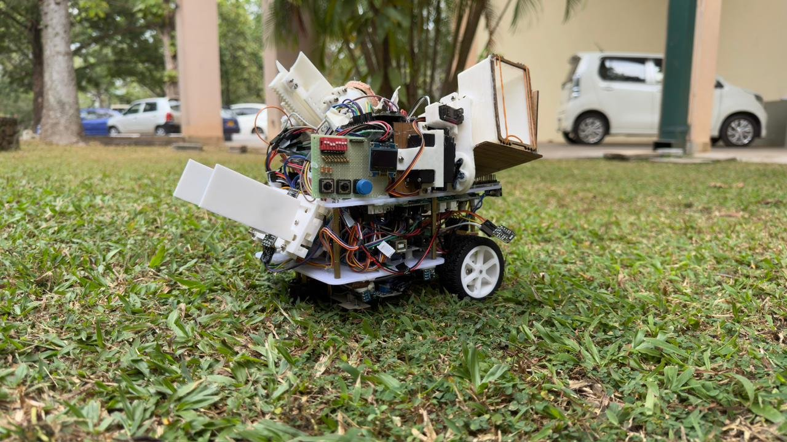

Autonomous Multi-Challenge Competition Robot
EN2533's entry — a single autonomous robot engineered to clear grid navigation, line tracking, ramp ascent, wall following and target shooting in one uninterrupted run.

Overview
Built for the EN2533 Robot Design and Competition module, this robot had to autonomously complete a sequence of very different physical challenges without any operator intervention: navigating a structured grid by detecting intersections and reasoning about direction, tracking a broken/dotted line under closed-loop PID correction, climbing and descending an inclined ramp under active velocity control, following the curvature of a circular wall using an IR sensor array, and finally aligning to a target and firing a motor-driven projectile launcher.
The firmware is organized as a modular, task-based Arduino codebase rather than one monolithic sketch — each behavior (grid mapping, dotted-line PID, ramp climbing, wall following, shooting) lives in its own file, with a central main control loop handling task switching, mode management and execution sequencing so the robot can hand off cleanly from one challenge to the next.
Underneath every task sits the same differential-drive foundation: shared translational and rotational motion primitives, a common low-level motor instruction layer, and sensor filtering utilities that feed the IR array readings into whichever task is currently active. Ramp ascent in particular relies on active motor power compensation to hold a stable climb rate as the incline changes the load on the drivetrain.
Key Features
- 01Grid navigation with intersection detection, mapping and directional decision logic
- 02PID-controlled line tracking that holds trajectory across broken/dotted line segments
- 03Velocity-controlled ramp ascent and descent with active motor power compensation
- 04Circular wall following via a continuous IR sensor array distance measurement
- 05Motor-driven projectile launcher with target alignment and triggered firing
- 06Modular task-based Arduino firmware with centralized task switching and mode management
Runs
Dotted Line Following
Ramp Ascent
Circular Wall Following